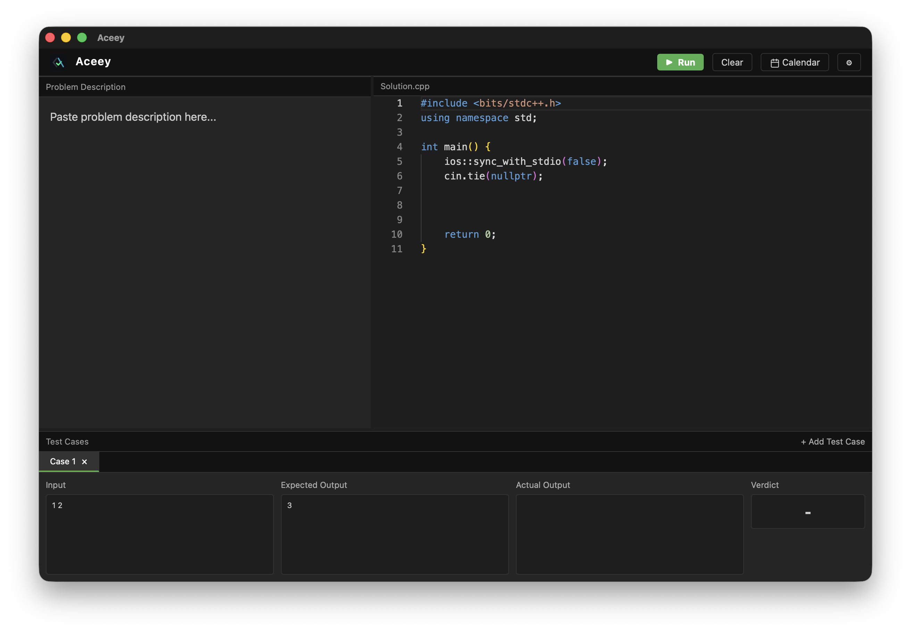
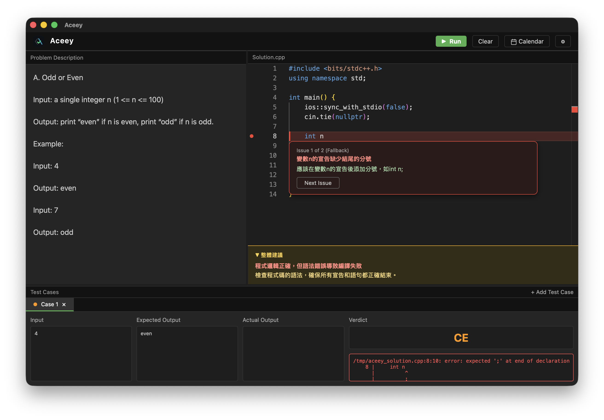
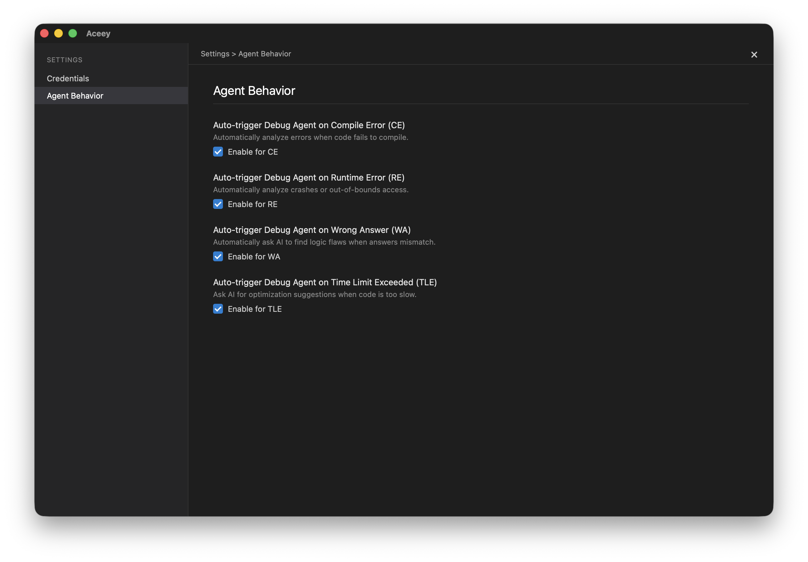
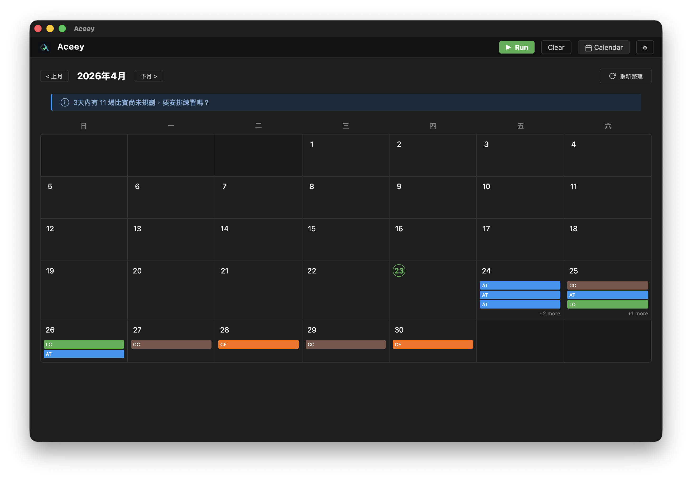

跨越開發工具與練習平台的邊界，Aceey 是你的 AI 專屬導師。
由於 Aceey 是未簽署的開源程式，請在終端機執行以下指令解除隔離：
xattr -cr /Applications/Aceey.app

Aceey 的核心是蘇格拉底式引導——不給答案，只給提示。選一個常見錯誤，親自體驗 Agent 怎麼幫你找到問題。
One hot summer day Pete and his friend Billy decided to buy a watermelon. After that the watermelon was weighed, and the scales showed w kilos.
Pete and Billy are great fans of even numbers, that's why they want to divide the watermelon in such a way that each of the two parts weighs even number of kilos.
Input: The first (and the only) input line contains integer number w (1 ≤ w ≤ 100).
Output: Print YES, if the boys can divide the watermelon into two parts, each of them weighing even number of kilos; and NO in the opposite case.
支援手動快速匯入題目敘述與多組測資，提供純粹且無干擾的解題環境。
整合本地 g++ 工具鏈，在每次存檔後自動編譯並在沙盒中運行所有測試案例。
當程式碼出錯時，AI 不會直接給出修復方案，而是引導你找出根本原因。
不直接給答案，而是透過提問引導你思考，培養真正的解題能力與除錯直覺。

自動追蹤你的歷史弱點與常犯錯誤，針對性地加強訓練，避免重蹈覆轍。

內建各大平台競賽行事曆，並能根據比賽時間反推每日訓練菜單，維持手感。

基於 Tauri v2 架構，安裝檔僅約 10MB，啟動速度極快且資源佔用極低。
整合 Groq Llama 3 70B API，推理速度高達 800 tokens/s，即時回應不中斷。
自訂 API Key 串接，達到幾乎免費的 FinOps 級別開發體驗。
| 功能 | Aceey | CP Editor | LeetCode | Cursor |
|---|---|---|---|---|
| 目標客群 | 競技程式選手 | 競技程式選手 | 面試刷題者 | 軟體開發者 |
| AI 蘇格拉底引導 | 核心功能 | 無 | 無 | 直接給 Code |
| 錯誤記憶系統 | 自動追蹤 | 無 | 無 | 無 |
| 本地編譯與測資 | 支援 | 支援 | 雲端 | 需手動配置 |
由於 Aceey 是未簽署的開源程式，請在終端機執行以下指令解除隔離：
xattr -cr /Applications/Aceey.app